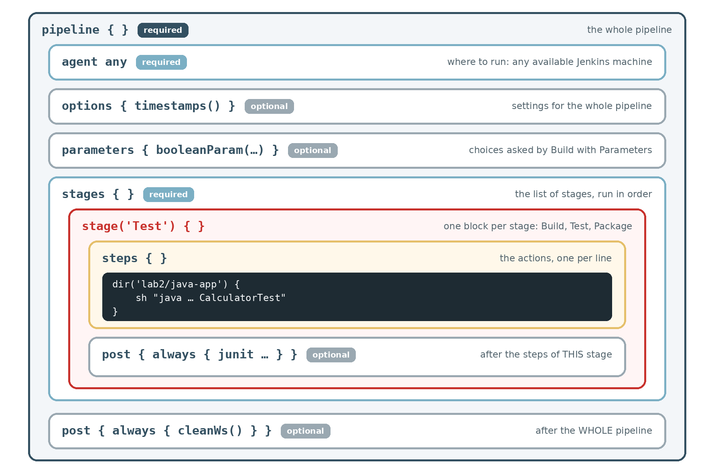

2. The Jenkinsfile Line by Line
Before running the pipeline, read it. This page explains every line of lab2/java-app/Jenkinsfile, so that you can write the same kind of file for your own projects. Keep the file open on GitHub next to this page.
The map
A Jenkinsfile is a set of boxes inside boxes. Each box is a keyword followed by { }. Some boxes are required, others are optional.

You do not have to remember the syntax
Every block of this file can be generated by Jenkins. On any Pipeline job, click Pipeline Syntax (left menu). The page has two generators in its left menu:
- Snippet Generator: the steps, the lines that do something (
sh,bat,dir,junit,archiveArtifacts,cleanWs…); - Declarative Directive Generator: the blocks around them (
agent,options,parameters,stage,post…).
Choose an item, fill in the form, click Generate, and copy the result. After each part below, open Generate it with Pipeline Syntax to see which choices produce that code.
1. The start: pipeline and agent
// Pipeline for the Java calculator (Docker, Linux, macOS)
pipeline {
agent any// …: a comment for humans. Jenkins ignores it.pipeline {: every declarative Jenkinsfile starts with this line. Its closing}is the last line of the file.agent any: where to run the pipeline: on any available Jenkins machine. In the lab there is only one: your Jenkins (in its Docker container, or on your Windows PC). In companies,agentcan choose a Linux machine, a Windows machine, or a Docker container.
Generate it with Pipeline Syntax: agent
- Pipeline Syntax › Declarative Directive Generator.
- Sample Directive:
agent: Agent. Agent:Any. - Click Generate Declarative Directive: you get
agent any.
pipeline { } itself has no generator: it is always the first and last line.
2. options: settings for the whole pipeline
options {
timestamps() // Timestamper plugin
}options { }: settings that apply to the whole pipeline. Optional.timestamps(): writes the time at the start of every log line. This option comes from the Timestamper plugin. The parentheses()are required, even when empty.- Other useful options:
timeout(time: 10, unit: 'MINUTES')stops a build that takes too long;buildDiscarder(logRotator(numToKeepStr: '5'))keeps only the last 5 builds.
Generate it with Pipeline Syntax: options
- Pipeline Syntax › Declarative Directive Generator.
- Sample Directive:
options: Options. - Click Add and choose Timestamps.
- Click Generate Declarative Directive: you get
options { timestamps }, on three lines.
The generator writes timestamps without parentheses; our Jenkinsfile writes timestamps(). Both work: inside options, Jenkins accepts the two forms.
Try other entries of the Add list, for example Timeout: the generator writes the exact syntax.
3. parameters: questions asked before the build
parameters {
booleanParam(name: 'SIMULATE_BUG', defaultValue: false,
description: 'Tick to put a bug in the calculator')
}parameters { }: the form shown by Build with Parameters. Optional.booleanParam(…): a checkbox (true or false).name: 'SIMULATE_BUG': the name of the parameter. In the steps, you read its value withparams.SIMULATE_BUG.defaultValue: false: unticked unless you tick it.description: …: the help text shown under the checkbox.- The form
key: value, key: valueis called named arguments. The line can break inside the parentheses, after a comma. - Two other types:
string(name: 'NAME', defaultValue: 'student', description: 'Your name')for a text box, andchoice(name: 'TARGET', choices: ['test', 'production'])for a drop-down list.
Generate it with Pipeline Syntax: parameters
- Pipeline Syntax › Declarative Directive Generator.
- Sample Directive:
parameters: Parameters. - Click Add, choose Boolean Parameter. Name:
SIMULATE_BUG, leave Default Value unticked, Description:Tick to put a bug in the calculator. - Click Generate Declarative Directive.
The result may be written a little differently, for example booleanParam description: '…', name: 'SIMULATE_BUG' without parentheses or without defaultValue: false (false is the default). It means the same thing.
4. stages and the Build stage
stages {
stage('Build') {
steps {
dir('lab2/java-app') {
sh 'javac -version'
sh 'javac -d build/classes src/Calculator.java test/CalculatorTest.java'
}
}
}stages { }: the list of stages. They run one after the other, in the order written.stage('Build') { }: one stage. The name in quotes is the column title in Stage View. Choose short names: Build, Test, Package, Deploy.steps { }: the actions of the stage, one per line.dir('lab2/java-app') { }: runs the steps inside it in that folder, likecd lab2/java-app. After the closing}, you are back at the root of the repository.sh 'javac -version':shruns a shell command. This one prints the version of the Java compiler: useful in the log to know what was used.sh 'javac -d build/classes src/Calculator.java test/CalculatorTest.java': compiles the two files.javacis the Java compiler;-d build/classesmeans "put the compiled.classfiles in the folderbuild/classes".
Generate it with Pipeline Syntax: stage, dir and the shell command
- Pipeline Syntax › Declarative Directive Generator, Sample Directive:
stage: Stage. Stage name:Build, Stage Directives:steps. Generate: you get the emptystage('Build') { steps { … } }. - Pipeline Syntax › Snippet Generator, Sample Step:
dir: Change current directory. Path:lab2/java-app. Generate Pipeline Script:dir('lab2/java-app') { … }. - Pipeline Syntax › Snippet Generator, Sample Step:
sh: Shell Script(Docker) orbat: Windows Batch Script(Windows). Script:javac -version. Generate:sh 'javac -version'. - Put the pieces inside each other: the
shline insidedir,dirinsidesteps.
5. The Test stage, with its own post
stage('Test') {
steps {
dir('lab2/java-app') {
sh "java -DsimulateBug=${params.SIMULATE_BUG} -cp build/classes CalculatorTest"
}
}
post {
always {
junit 'lab2/java-app/build/test-results/*.xml' // JUnit plugin
archiveArtifacts artifacts: 'lab2/java-app/build/test-results/*.xml'
}
}
}- Double quotes on the
shline, because the text contains${params.SIMULATE_BUG}. Before running the command, Jenkins replaces it bytrueorfalse. With single quotes, the text${params.SIMULATE_BUG}would be sent as it is, and the command would fail. javaruns a compiled Java program:-DsimulateBug=truegives a setting to the program.Calculator.javareads it withBoolean.getBoolean("simulateBug").-cp build/classes("class path"): where to find the.classfiles.CalculatorTest: the class to run. Itsmainmethod runs the 4 tests and writes the reportbuild/test-results/TEST-CalculatorTest.xml.
post { }inside a stage: runs after the steps of this stage.always { }: in every case, success or failure. We want the test report even when tests fail.junit '…/*.xml': the JUnit plugin reads the report and creates the Tests page and the trend chart. If a test failed, it marks the build UNSTABLE (yellow).*means "any file name".archiveArtifacts artifacts: '…/*.xml': also keeps the raw report file, so you can open it from the build page (see part 4).- The
junitline is outsidedir(…), so its path starts from the root of the repository:lab2/java-app/….
Generate it with Pipeline Syntax: post and junit
- Pipeline Syntax › Declarative Directive Generator, Sample Directive:
post: Post Stage or Build Conditions. Under Conditions, tick Always run, regardless of build status. Generate Declarative Directive:post { always { … } }. - Pipeline Syntax › Snippet Generator, Sample Step:
junit: Archive JUnit-formatted test results. Test report XMLs:lab2/java-app/build/test-results/*.xml. Generate:junit 'lab2/java-app/build/test-results/*.xml'. - Put the
junitline insidealways { }, and thepostblock in the stage, aftersteps.
Each checkbox is one condition: Always run, regardless of build status = always; Run if the build status is "Unstable" = unstable; Run when the build status is "Aborted" = aborted; Always run after all other conditions = cleanup. Tick several to get several blocks at once.
For the java -DsimulateBug=… line, use sh / bat as in part 4, then change the quotes to double quotes by hand: the generator does not know about ${params…}.
6. The Package stage
stage('Package') {
steps {
dir('lab2/java-app') {
sh 'jar cfe build/calculator.jar Calculator -C build/classes .'
sh 'java -jar build/calculator.jar'
}
archiveArtifacts artifacts: 'lab2/java-app/build/calculator.jar', fingerprint: true
}
}
}jar cfe build/calculator.jar Calculator -C build/classes .: builds a .jar file, the package that you would deliver.c= create;f= the file name follows:build/calculator.jar;e= the entry point follows:Calculator, the class withmain;-C build/classes .= take all the files ofbuild/classes.
java -jar build/calculator.jar: runs the package once, to check that it starts (a "smoke test").archiveArtifacts artifacts: …, fingerprint: true: keepscalculator.jaron the build page, so you can download it.fingerprint: truerecords a unique ID of the file, to know later which build produced it.- The last
}of this block closesstages.
Generate it with Pipeline Syntax: archiveArtifacts
- Pipeline Syntax › Snippet Generator, Sample Step:
archiveArtifacts: Archive the artifacts. - Files to archive:
lab2/java-app/build/calculator.jar. - Click Advanced and tick Fingerprint all archived artifacts.
- Click Generate Pipeline Script:
archiveArtifacts artifacts: 'lab2/java-app/build/calculator.jar', fingerprint: true.
7. post for the whole pipeline
post {
always {
cleanWs() // Workspace Cleanup plugin
}
}
}post { }directly insidepipeline: runs once, after all the stages.- Conditions you can use in
post:always,success(green),unstable(yellow),failure(red),aborted(stopped). cleanWs(): the Workspace Cleanup plugin deletes the files of the build, so the next build starts from a clean folder.- The very last
}closespipeline.
Generate it with Pipeline Syntax: post and cleanWs
- Pipeline Syntax › Declarative Directive Generator, Sample Directive:
post: Post Stage or Build Conditions. Tick Always run, regardless of build status. Generate Declarative Directive. - Pipeline Syntax › Snippet Generator, Sample Step:
cleanWs: Delete workspace when build is done. Keep the default options. Generate Pipeline Script:cleanWs(). - Put
cleanWs()insidealways { }, and thispostblock at the end ofpipeline, afterstages.
Not in the list? The Workspace Cleanup plugin is missing: the generator only shows the steps of the plugins you have.
8. Docker or Windows: one difference
Jenkinsfile-windows is the same file, with bat instead of sh on the 4 command lines. sh runs a Linux shell command; bat runs a Windows command (cmd). Everything else (echo, dir, junit, archiveArtifacts, cleanWs) is a Jenkins step and works on both.
9. Write your own: the recipe
Almost every CI pipeline has the same shape. Only the commands change:
pipeline {
agent any
options {
timestamps()
}
stages {
stage('Build') {
steps {
sh 'BUILD COMMAND'
}
}
stage('Test') {
steps {
sh 'TEST COMMAND'
}
}
stage('Package') {
steps {
sh 'PACKAGE COMMAND'
}
}
}
post {
always {
cleanWs()
}
}
}| Project | Build | Test | Package |
|---|---|---|---|
| Java (this lab) | javac … | java … CalculatorTest | jar cfe … |
| Java with Maven | mvn compile | mvn test | mvn package |
| Python | pip install -r requirements.txt | pytest | python -m build |
| JavaScript (Node) | npm install | npm test | npm pack |
The tools in the table must be installed on the Jenkins machine. In this lab only Java is available, which is why the project uses javac, java and jar.
Quick exercise (5 min)
Without copying, write a pipeline that has:
- a text parameter
NAME, default valuestudent; - a stage Hello that prints
Hello, <NAME>!withecho; - a stage Java version that runs the command
java -version.
Create a Pipeline job from-scratch, paste your script, then run Build Now once and Build with Parameters with your own name.
Show the solution
Jenkins in Docker:
pipeline {
agent any
parameters {
string(name: 'NAME', defaultValue: 'student', description: 'Your name')
}
stages {
stage('Hello') {
steps {
echo "Hello, ${params.NAME}!"
}
}
stage('Java version') {
steps {
sh 'java -version'
}
}
}
}Jenkins installed on Windows: the same script, with bat instead of sh in the last stage:
stage('Java version') {
steps {
bat 'java -version'
}
}Check: double quotes around "Hello, ${params.NAME}!", because of the variable. With single quotes, Jenkins prints ${params.NAME} literally. With sh on a Windows Jenkins, the build fails with Cannot run program "sh".